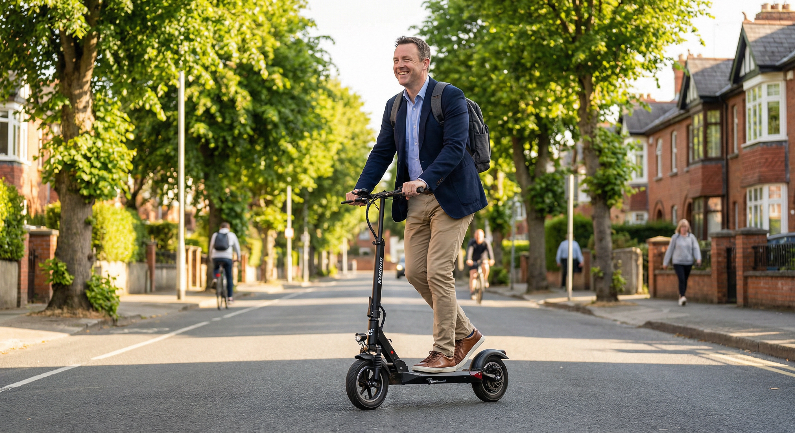

Forget the socks and aftershave. This year, give your father something he'll genuinely use every day — a powerful e-scooter built for Irish roads, Irish weather, and the daily Dublin grind.
Shop E-Scooters for Dad

Let's be honest — dads are famously hard to buy for. An electric scooter ticks every box: practical, exciting, money-saving, and just a bit cool.
Think about his typical week. The morning commute through Dublin traffic, quick runs to Tesco for milk, picking up a takeaway on Friday evening. An e-scooter handles all of it — quietly, cheaply, and without the headache of finding parking.
With petrol prices still climbing, the average Dublin commuter spends well over €2,000 a year just getting to work. An e-scooter costs roughly 10 cent to charge. Over a year, Dad could save enough for a family holiday.


Dads don't do half measures. That's why we've picked scooters with serious power — up to 800W motors that handle hills, headwinds, and heavier riders without breaking a sweat.
Durability matters too. These KuKirin models feature reinforced frames, disc brakes front and rear, and pneumatic tyres that soak up Dublin's potholes. They're built for daily punishment, not just weekend fun.
And with ranges stretching up to 80km on a single charge, Dad can commute all week without reaching for the charger. That's real-world reliability for real Irish conditions.
Three powerful e-scooters built for daily commuting and weekend adventures. Free delivery and a full 1-year warranty with every order.


80km Range • 50km/h Top Speed • Premium Build • Long-Distance Ready
Browse our full range of e-scooters or get in touch for personalised advice on the perfect scooter for your dad.
Shop Now Contact Us